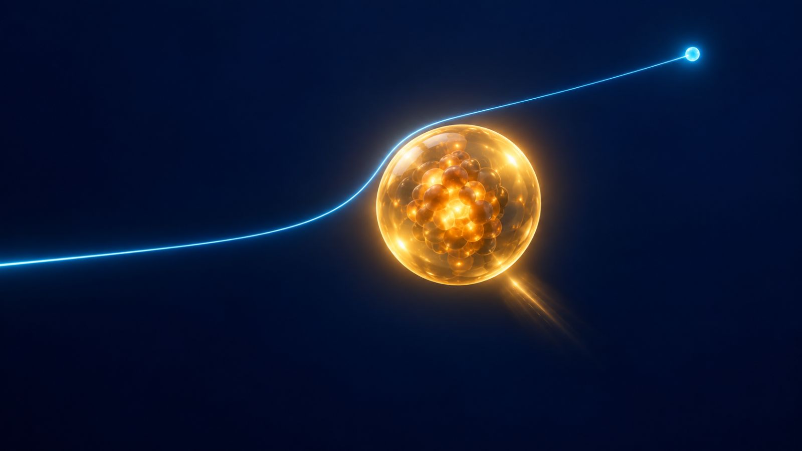
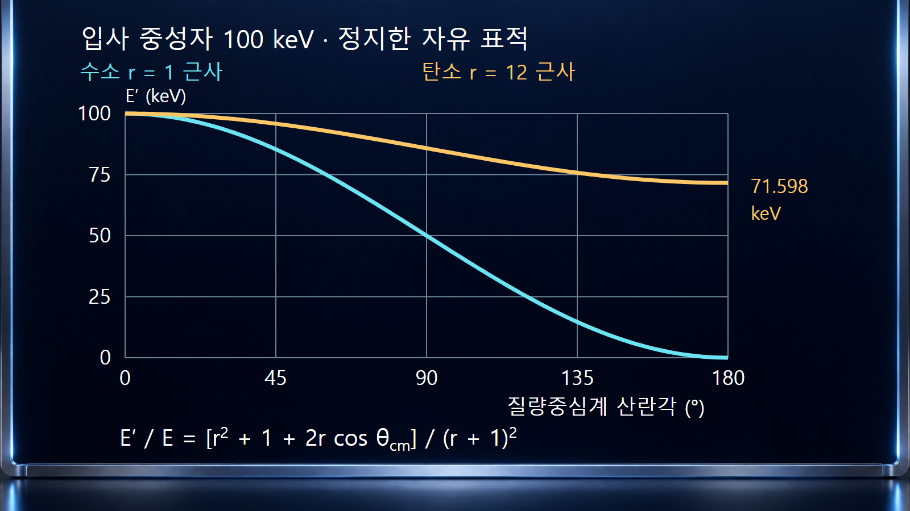
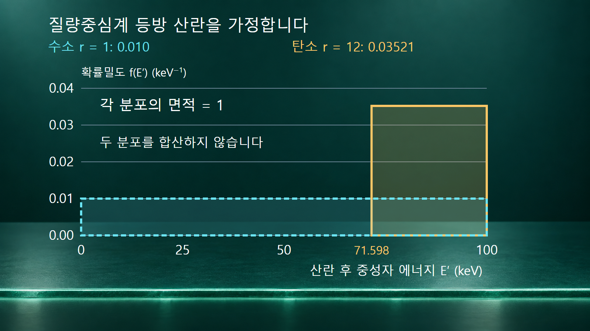

질량·에너지와 핵반응 · 030
탄성산란
충돌 전후 입자 종류와 핵 내부상태는 같고 운동에너지만 재분배되는 산란

핵의 탄성산란은 입사입자와 표적의 내부 상태가 바뀌지 않은 채 운동 방향과 에너지가 재분배되는 과정입니다. 처음에 정지한 표적을 중성자가 때리면 표적핵이 반동하며 운동에너지를 얻습니다. 따라서 중성자 에너지는 감소할 수 있지만, 중성자와 표적의 운동에너지 합은 보존됩니다.
1. 내부 상태와 전체 운동에너지를 구분합니다
중성자와 자유 표적핵의 탄성산란에서는 반응 전후 입자의 정지질량과 내부 상태가 같아 Q = 0입니다. [1] [3] 입사 중성자의 운동에너지를 E, 산란 후 에너지를 E′, 표적의 반동에너지를 ER로 쓰면 정지 표적 조건에서 E = E′ + ER입니다. [1] [3] 에너지가 없어지는 것이 아니라 두 물체 사이에서 나뉩니다.
표적이 새로운 들뜬상태에 남는 비탄성산란과는 이 내부 상태 조건이 다릅니다. 다만 탄성산란이라는 최종 상태의 이름만으로 반응 기작이 하나로 고정되지는 않습니다. 퍼텐셜 산란뿐 아니라 복합핵을 만들었다가 원래 내부 상태로 돌아오는 공명 탄성산란도 가능합니다.
2. 얼마나 잃는지는 질량비와 산란각이 정합니다
표적핵 질량 M과 중성자 질량 mn의 비를 r = M/mn으로 놓습니다. 표적이 처음에 정지해 있고 비상대론적 운동학을 적용하면 E′/E = (r2 + 1 + 2r cos θcm)/(r + 1)2입니다. θcm은 질량중심계에서 본 중성자의 산란각입니다. 실험실에서 측정한 각도를 변환하지 않고 이 자리에 넣으면 잘못된 에너지를 얻을 수 있습니다.
θcm = 0에서는 E′ = E이고, 180°에서는 남는 중성자 에너지가 가장 작아집니다. 충돌계수 α = [(r − 1)/(r + 1)]2로 쓰면 가능한 범위는 αE ≤ E′ ≤ E입니다. 최대 에너지 전달 비율은 1 − α = 4r/(r + 1)2입니다. 이 범위는 운동학적 허용 범위이며 각 에너지가 똑같이 자주 발생한다는 뜻은 아닙니다.
3. 예시 1: 수소에서는 거의 전부를 넘길 수 있습니다
100 keV 중성자가 정지한 수소핵과 산란한다고 가정합니다. 중성자와 양성자의 질량을 같게 근사하여 r = 1로 두면 α = 0입니다. 이 이상화에서 정면충돌의 최대 전달 극한은 중성자 에너지가 0에 가까워지고 표적 양성자가 100 keV를 얻는 경우입니다. 실제 두 입자 질량은 조금 다르므로 정밀 계산에는 실제 질량비를 넣습니다.
질량중심계 산란각을 90°로 지정하면 E′/E = 1/2이므로 중성자 50 keV, 양성자 반동 50 keV입니다. 두 값의 합은 100 keV로 입력과 같습니다. 이 각도에서의 한 사건 계산과, 여러 산란 사건의 평균을 계산하는 일은 구분합니다. 50 keV라는 같은 수치가 나오더라도 근거가 같지는 않습니다.
4. 예시 2: 탄소는 한 번에 넘기는 몫이 작습니다
동일한 100 keV 중성자와 정지 탄소-12 표적에서 질량비를 r ≈ 12로 놓으면 α = (11/13)2 = 121/169 ≈ 0.715976입니다. 질량중심계에서 완전히 뒤쪽으로 산란하는 극한에도 중성자는 약 71.598 keV를 유지하고 탄소핵은 약 28.402 keV를 얻습니다.
질량중심계 산란각이 60°이면 cos θcm = 1/2이므로 E′/E = 157/169입니다. 따라서 중성자 에너지는 약 92.899 keV이고 탄소 반동은 약 7.101 keV입니다. 같은 핵종·입사에너지라도 산란각에 따라 에너지 전달량이 달라집니다.
| 조건 | 산란 후 중성자 | 표적 반동 | 합 |
|---|---|---|---|
| 수소, r = 1, θcm = 90° | 50.000 keV | 50.000 keV | 100.000 keV |
| 탄소, r = 12, θcm = 60° | 92.899 keV | 7.101 keV | 100.000 keV |
| 탄소, r = 12, θcm = 180° | 71.598 keV | 28.402 keV | 100.000 keV |
표의 숫자는 정지 자유 표적·질량비 근사·비상대론적 운동학에 따른 계산값입니다. 실제 측정 스펙트럼이나 특정 재료의 평균 에너지 손실을 그대로 나타내지는 않습니다.

5. 평균을 구하려면 각도 분포가 더 필요합니다
질량중심계에서 산란이 등방적이라는 가정을 추가하면 같은 크기의 입체각으로 나갈 확률이 같습니다. 이때 cos θcm은 −1부터 1까지 균일하며, E′는 αE부터 E까지 균일하게 분포합니다. θ 자체를 0~180°에서 균일하게 뽑는 것과는 다릅니다.
이 조건에서 평균 산란 후 에너지는 ⟨E′⟩ = (1 + α)E/2, 평균 전달에너지는 ⟨ER⟩ = (1 − α)E/2입니다. 100 keV 예시에서 수소의 평균 중성자 에너지는 50 keV, 탄소는 약 85.799 keV입니다. 탄소의 평균 전달량 약 14.201 keV는 최대 전달량 약 28.402 keV의 절반입니다.
각 충돌이 항상 이 평균만큼 에너지를 잃는 것은 아닙니다. 또한 에너지에 따라 산란이 특정 방향에 집중되면 단순 평균식 대신 평가된 각도 분포로 평균을 구합니다. 핵종 이름만으로 모든 입사에너지에서 등방성을 가정하지 않습니다.

6. 열운동과 결합 상태가 중요해지는 영역
표적핵의 열운동을 무시하기 어려운 낮은 중성자 에너지에서는 중성자가 표적으로부터 에너지를 얻는 상향산란도 가능합니다. 따라서 탄성산란이면 중성자가 반드시 느려진다는 설명은 정지 표적 가정 안에서만 적용합니다. 열적 영역의 상세 해석에는 표적 운동을 포함한 산란 법칙이 필요합니다.
물이나 흑연 같은 물질에서는 원자가 분자 또는 결정에 결합되어 있습니다. 개별 자유핵 충돌 모형으로 충분한 에너지 영역과, 진동·격자 운동 등을 고려해야 하는 영역을 구분해야 합니다. 핵의 내부 상태가 바뀌지 않는다는 조건과 주변 물질의 에너지 교환이 없다는 조건을 같은 말로 취급하지 않습니다.
7. 감속재 선택은 한 번의 충돌만으로 끝나지 않습니다
가벼운 핵과의 충돌은 한 번에 큰 에너지를 전달할 수 있어 중성자 감속을 이해하는 출발점이 됩니다. 그러나 실제 감속 성능에는 충돌이 일어날 빈도를 정하는 산란단면적과 원자수밀도, 중성자를 잃는 흡수, 재료의 온도와 상태도 함께 작용합니다. 에너지 전달 비율만 보고 특정 재료가 모든 용도에서 가장 좋다고 결론 내리지 않습니다.
탄성산란 계산을 검산할 때에는 내부 상태가 보존되는지, 표적을 정지 자유핵으로 볼 수 있는지, 각도가 어느 기준계에서 정의되는지, 평균에 어떤 각도 분포를 썼는지를 확인합니다. 이 네 조건이 분명하면 중성자의 에너지 감소와 전체 에너지 보존을 동시에 설명할 수 있습니다.